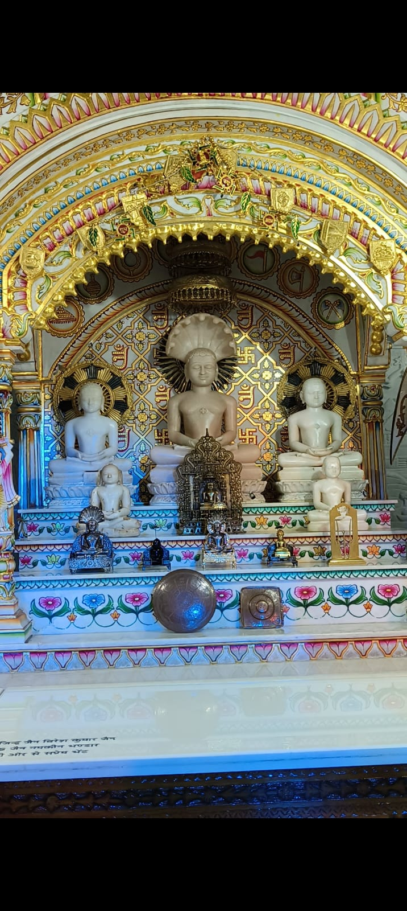

JIN SHASAN PRABHAVNA SANGH • KARNAL
A digital home for Jain youth in Karnal.
Discover. Connect. Learn. Experience. Participate. Serve.
A community space for Jain darshan, yatras, knowledge, bhakti, events and seva — created to bring young Jains together.
From spiritual reflections and Jain knowledge to temple visits, yatras, bhakti, community celebrations, and seva, we strive to keep our traditions alive, strengthen our bonds, and carry the essence of Jainism forward to the next generation.

JIN DARSHANFaith • Community • Journey
START EXPLORING
Everything you need, one click away.
YatraTrips, destinations & darshan↗
KnowledgeLearn about Jain Dharma↗
BhaktiBhajans, chalisa & stotras↗
CalendarKalyanak, yatras & events↗
EventsCommunity activities & updates↗
Kids' CornerColour, play & learn↗
8Yatras Organised
12Jain Mandirs Visited
16Devotional Entries
Every SundayPathshala • 8–9 AM
Counts are based on published trip and Bhakti Library records.
COMING UP
Upcoming events
The next dates from our community calendar.
YOUR JAIN JOURNEY
Learn. Explore. Pray. Play.
Choose a path and continue at your own pace.
FEATURED THIS WEEK
Panch Kalyanak & Jain Parvas
Explore the five auspicious milestones in a Tirthankara's life and the Jain parvas that inspire spiritual reflection.
Discover the article →KIDS & FAMILY
Little ways to learn, play & create.
Explore Jain values through child-friendly learning, games and creative activities.
LEARN TOGETHER
Sunday Pathshala
Stories, Jain Dharma, values and sanskar for young learners.
Explore Pathshala →PLAY & DISCOVER
Jain Games
Find Tirthankars, solve word challenges, match symbols and try a Jain quiz.
Play Games →MAKE SOMETHING
Colouring Studio
Colour Jain-inspired pictures on screen, then download or print your artwork.
Start Colouring →OUR SHARED MEMORIES
Community moments
A glimpse of the journeys and places we have visited together.
Badegaon
Trilok Teerth Dham and other Jain temples.
COME BE A PART OF IT
Faith grows stronger when we grow together.
Participate in yatras, connect with the sangh, share your skills and contribute to community life.